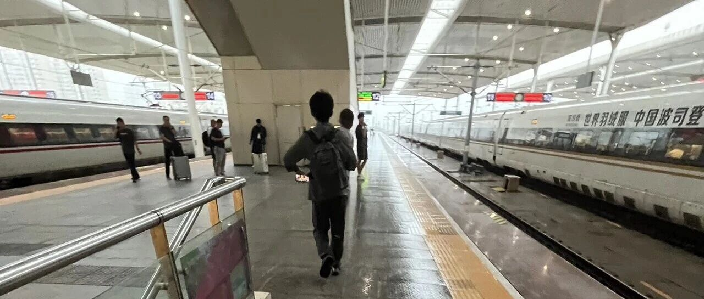

决定手术了
点击关注 秋秋在分享
一起实现财务自由退休
大家好，我是秋秋呀！
我又回北京了，上次带婆婆来检查，结果不太好，肺腺癌，已经住院准备手术了。
财务自由路上，总会有各种拦路虎。
我想过不说出来，只留给大家美好的一面，可是又觉得真实才最重要。
我的FIRE路上不完美，这才是我分享的意义吧。
我有个一岁多的小宝宝，未来教育成长有很长的路要走。
我们还有4个老人迈入60岁大关，未来养老也要负责。
但是！我依旧有信心继续快乐的生活，持续现在的生活方式。
比如旅游，带着小孩子不方便太频繁的挪动，我们改成旅居。
虽然不能常常看新鲜的风景，但是每个地方租房子住一个月到半年，节奏慢了，体验感却更好了。

也有人问宝宝上学了你还怎么出去玩？
我们会根据现有条件选择最适合的FIRE方式。
在能出去玩的阶段选择旅居，到宝宝大一点了就选择旅行。
到上学了，就把注意力集中在自己的家中就行了，暑假去玩也没事。
到老了我走不动了，我依旧可以躺家里FIRE。
就像你会根据自己不同的年龄、不同的阅历和体力选择想做的事一样。
5岁喜欢动画片，15岁喜欢动漫，20岁喜欢青春片，30岁可能就喜欢去书店了。
旅居还是在家里露台上种种花，对我来说都是一样快乐的。
我在威海会快乐，来北京也觉得很好玩。
核心是我知道每一种状态下，如何获得幸福。
FIRE是不能永葆青春，交换来一切的。
当你有钱又有闲，再面对未知和衰老的时候，更需要好心态加持。
否则你得到越多、拥有越多、筹码越多，你害怕的也就越多，执念越多。
像这次我们定的酒店就很漂亮，院子里有小鱼，宝宝每天都要去看。


附近还去了一个爬虫市集，看到很多奇奇怪怪的动物，很新鲜。
下图有蛇⬇️


我给宝宝买了新玩具，自己也买了新玩具，超级可爱：

北京好吃的就更多了，我已经迫不及待要去吃各种驻京办了。
若无闲事挂心头，便是人间好时节。
而老人生病，也并会耽误我们行程。
因为行程根本不存在！
在面对任何变动的时候能自由的调整，才是FIRE带来的终极好处吧。
我不觉得FIRE后一定要完成什么什么，而是无论发生什么，我都们有的选。
就像定好明天的车票，我也能任意改成某一天出发，因为时间都属于我自己。
当有了这种灵活的心态，一切都会顺利的吧。
因为无所畏惧，我才会有信心，说我能一直这样生活下去。
不管命运给了我什么，我都接受呗～然后转化转化，又变成了自己喜欢的。
希望我FIRE路上的经验也能帮助到大家～
在没车没房有娃有老人的状态下，也能提前退休的～
(当然我也是做好了各种准备，不是盲目鼓励大家裸辞啥的)。